Dr. Maya Angelou
Voorname Dichter, Schrijfster en Burgerrechtenactivist

Maya Angelou tijdlijn
- 1928
Maya Angelou is geboren
Marguerite Johnson werd geboren in St. Louis, Missouri, op 4 april 1928. Haar vader, Bailey Johnson, was een portier en een mariene diëtiste en haar moeder... Vivian (Baxter) Johnson was een makelaar in onroerend goed, een opgeleide chirugische verpleegster en later een koopvaardij.Bailey Jr., bijgenaamd Marguerite "Maya", afgekort van "mijn-een-zus". - 1943
Maya Angelou bevalt van Guy Johnson
Toen Angelou 13 was, keerden zij en haar broer terug om bij haar moeder in San Francisco te wonen. Tijdens de Tweede Wereldoorlog woonde ze George Washington bij... Middelbare school en studeerde dans en drama met een beurs aan de California Labour School. Voordat ze afstudeerde, werkte ze als de eerste zwarte vrouwelijke tramconducteur in San Francisco. - 1944
Maya Angelou wordt eerste vrouwelijke tramdirigent
Mijn moeder zei: "Ja, maar wil je de baan?" En ik zei ja, en ze zei: "Ga het halen." 'Hier, ik zal je geld geven. Elke dag ga je naar beneden... Middelbare school en studeerde dans en drama met een beurs aan de California Labour School. Voordat ze afstudeerde, werkte ze als de eerste zwarte vrouwelijke tramconducteur in San Francisco. - 1954
Maya Angelou toert met de opera Porgy and Bess
Blevins Davis en Robert Breen produceerden een revival in 1952 die veel van de muziek uit de Crawford-versie herstelde... inclusief veel van de recitatieven, en verdeelde de opera in twee bedrijven, met de pauze nadat Crown Bess dwong om op Kittiwah Island te blijven. Deze versie herstelde het werk tot een meer operavorm, hoewel niet alle recitatieven werden behouden, en Porgy en Bess werden hartelijk ontvangen in Europa. - 1957
Maya Angelou neemt haar eerste album Miss Calypso op
Deze heruitgave was waarschijnlijk ingegeven door de popopleving van de exotica-space age. De omslag toont tenslotte Angelou gedrapeerd in een slip van een rode jurk... ronddraaien naast een vuur midden in een (bijna zeker nep) jungle. Het is echter echt niet zo vreemd of cheesy. Het is min of meer rechttoe rechtaan pop-calypso, met respect gezongen door Angelou, die bijna de helft van het materiaal schreef. - 1960
Maya Angelou wordt Noord-coördinator van de Southern Christian Leadership Conference
Eind jaren vijftig trad Angelou toe tot de Harlem Writers Guild, waar ze een aantal grote Afro-Amerikaanse auteurs ontmoette, waaronder James Baldwins... die later haar goede vriend en mentor zou worden. Nadat ze in 1960 de leider van de burgerrechten, Dr. Martin Luther King, Jr. voor het eerst had horen spreken, sloot ze zich aan bij de burgerrechtenbeweging, ging ze namens hen organiseren en werd ze Noordelijk coördinator van de Southern Christian Leadership Conference. In het begin van de jaren zestig woonde Angelou kort samen met de Zuid-Afrikaanse activist Vusumzi Make; ze verhuisde met hem en haar zoon Guy naar Caïro, Egypte, waar ze associate editor werd bij het weekblad The Arab Observer. - 1969
Maya Angelou publiceert I Know Why The Caged Bird Sings
I Know Why the Caged Bird Sings is de autobiografie uit 1969 over de beginjaren van de Afrikaans-Amerikaanse schrijfster en dichteres Maya Angelou. De eerste in een... een zesdelige serie, het is een coming-of-age-verhaal dat illustreert hoe sterk karakter en liefde voor literatuur kunnen helpen racisme en trauma te overwinnen. Het boek begint wanneer de driejarige Maya en haar oudere broer naar Stamps, Arkansas, worden gestuurd om bij hun grootmoeder te wonen en eindigt wanneer Maya op 17-jarige leeftijd moeder wordt. - 1972
Georgia, Georgia, eerste script van een Afro-Amerikaanse vrouw dat werd gefilmd
Dr. Angelou was een pionier in film en televisie en schreef het scenario en componeerde de score voor de film Georgia, Georgia uit 1972. Haar script, de... eerst door een Afro-Amerikaanse vrouw ooit gefilmd, werd genomineerd voor een Pulitzer Prize. Georgia, een zwarte Amerikaanse zangeres, komt naar Stockholm voor een show. Ze ontmoet een Amerikaanse deserteur en al snel zijn ze verliefd op elkaar. Maar de assistent van Georgië, Alberta, zegt dat ze bij haar eigen soort moet blijven. - 1972
Maya Angelou ontvangt de Pulitzerprijs-nominatie
Gedichten van liefde en spijt, van raciale strijd en confrontatie, liederen van mensen en liedjes van het hart - allemaal geladen met Maya Angelou's enthousiasme... voor het leven en haar woede over onrecht. Lyrische gedichten van verlangen, wrange blikken op verraad en isolement worden gecombineerd met een fel inzicht in "hatelijke toorn". Haar onderscheidingen omvatten een National Book Award-nominatie voor I Know Why the Caged Bird Sings, een Pulitzer Prize-nominatie voor haar poëziebundel, Just Give Me A Cool Drink of Water 'Fore I Diiie, - 1973
Maya Angelou trouwt met Paul du Feu
In 1973 trouwde Angelou met Paul du Feu, een in Engeland geboren timmerman en remodeler, en verhuisde met hem naar Sonoma, Californië. De jaren die volgden waren... enkele van Angelou's meest productieve jaren als schrijver en dichter. Ze werkte als componist, schreef onder meer voor zangeres Roberta Flack en componeerde filmscores. Ze schreef artikelen, korte verhalen, tv-scripts, autobiografieën en poëzie, produceerde toneelstukken en sprak op het universitaire lezingencircuit. - 1993
Maya Angelou reciteert On the Pulse of Morning bij de inauguratie van president Bill Clinton
In 1993 reciteerde ze haar gedicht On the Pulse of Morning bij de inauguratie van president Bill Clinton, waarmee ze de eerste dichter werd die een inauguratie deed... van president Bill Clinton, die de eerste dichter werd die een inaugurele voordracht deed sinds Robert Frost bij de inauguratie van John F. Kennedy in 1961. Sinds de jaren negentig heeft Angelou actief deelgenomen aan het lezingencircuit. - 2011
Maya Angelou bekroond met de presidentiële medaille van vrijheid
Maya Angelou ontving op 15 februari 2011 de Presidential Medal of Freedom door president Barak Obama. Dr. Angelou ontving ook het... Presidential Medal for the Arts in 2000 en de Lincoln Medal in 2008. En in 2012 had First Lady Michelle Obama de gelegenheid om haar de Literary Arts Award uit te reiken tijdens de BET Honours-ceremonie in Washington, D.C. “Door vast te houden, zelfs temidden van wreedheid en verlies, en vervolgens uit te breiden naar een gevoel van mededogen, een vermogen om lief te hebben" - Barak obama - 2014
Maya Angelou sterft
Al mijn werk, mijn leven, alles wat ik doe, gaat over overleven, niet alleen over kaal, vreselijk, ploeterend overleven... maar overleven met genade en geloof. Hoewel men veel nederlagen kan tegenkomen, moet men niet verslagen worden.
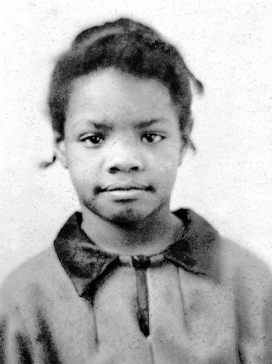
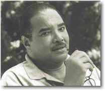
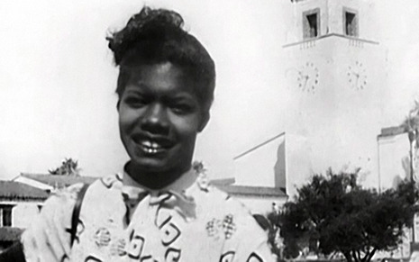
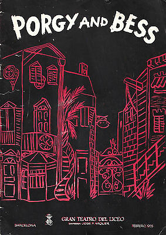
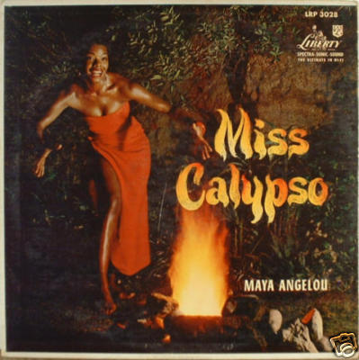
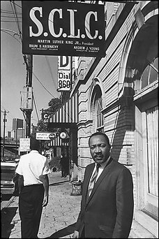
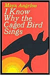
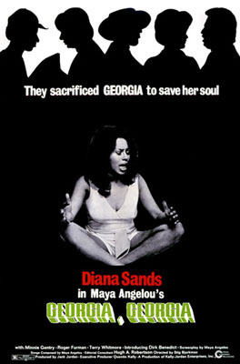
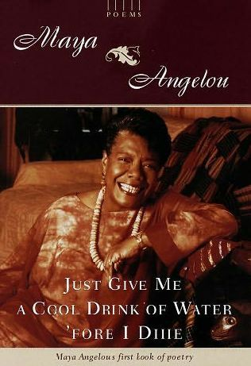
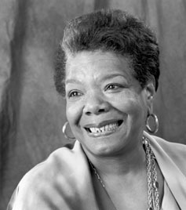
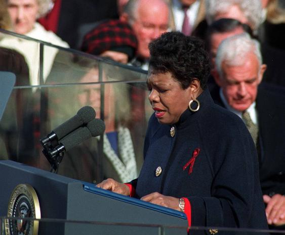
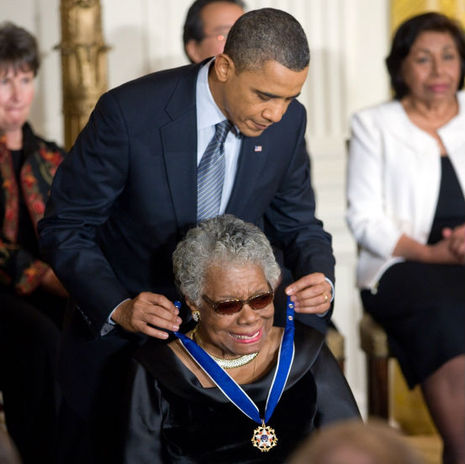
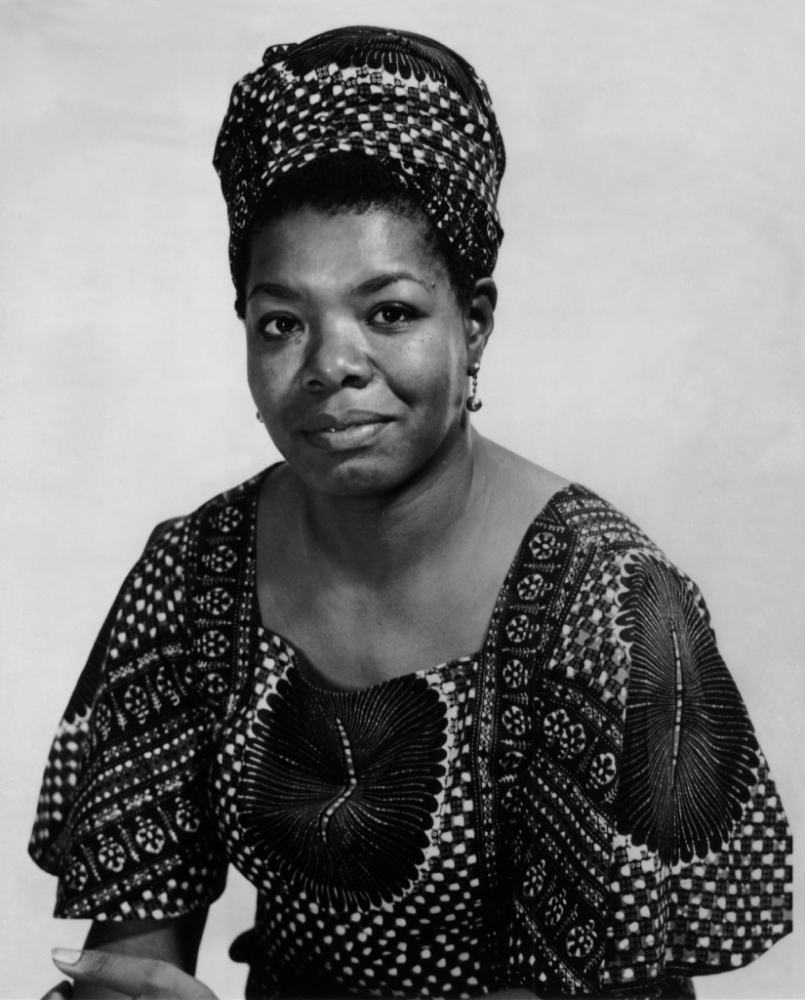
"Zonder moed kunnen we geen enkele andere deugd consequent beoefenen.
--Maya Angelou
We kunnen niet aardig, oprecht, barmhartig, genereus of eerlijk zijn."